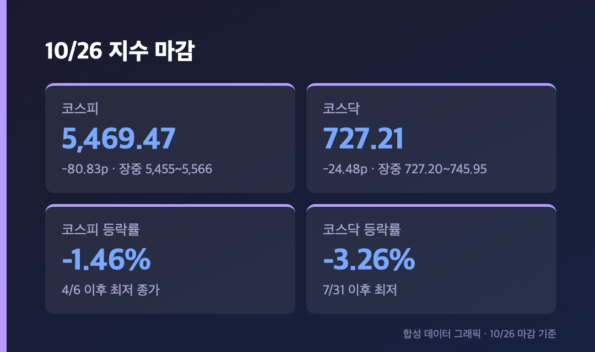
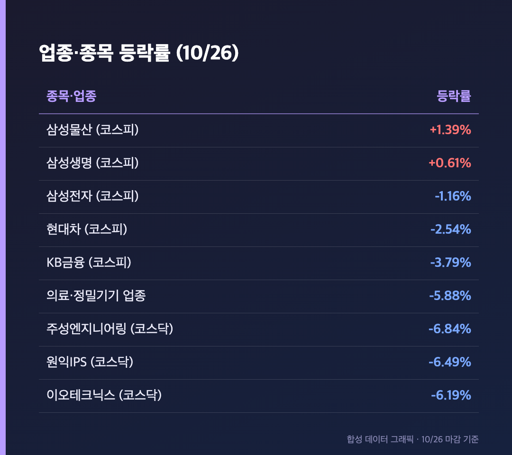
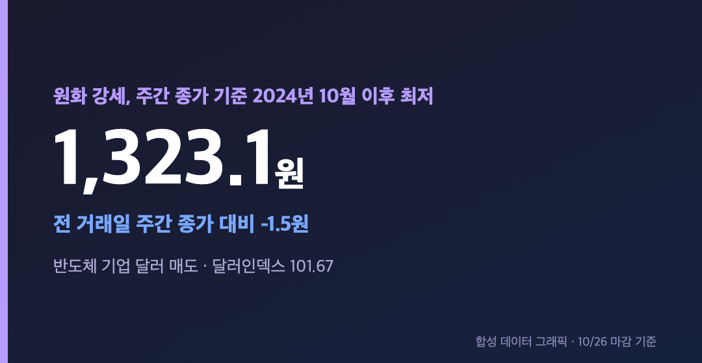
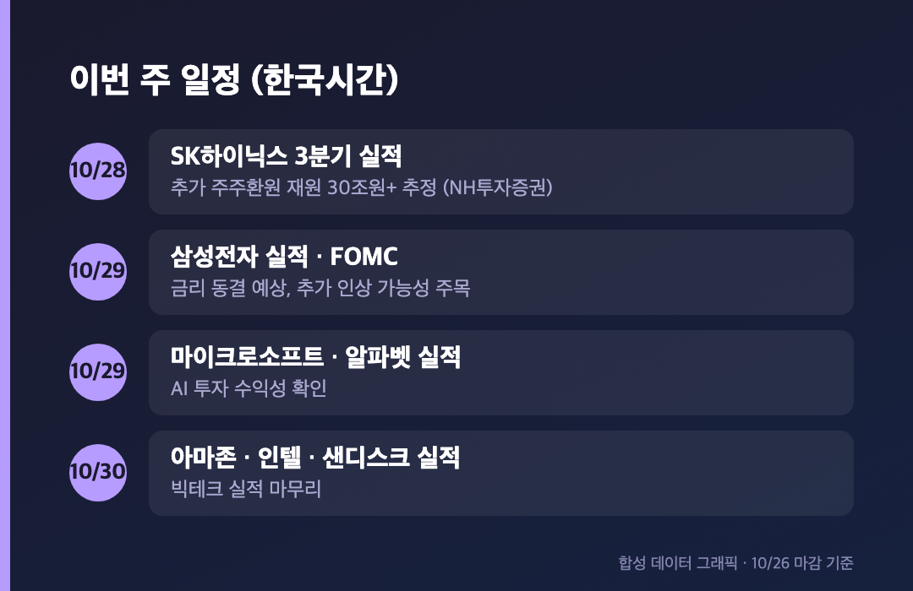

코스피 -1.46%만 보고 "오늘은 그나마 선방했네" 하셨다면 코스닥 창부터 열어보세요. -3.26%, 727.21입니다. 지수가 이렇게 갈린 날은 오랜만이에요.
참고로 오늘(10/26, 월)은 정상 개장일이었고, 아래 수치는 전부 오늘 마감 기준이에요.
📉 코스닥 -3.26%, 장중 저점 근처에서 마감 – 코스피는 7개월 만의 최저 종가
코스피 5,469.47 (-80.83포인트, -1.46%) / 코스닥 727.21 (-24.48포인트, -3.26%) |

코스피는 5,499.05로 출발해 장중 5,565.67까지 올랐다가 5,455.11까지 밀렸고, 5,469.47에 마감했어요. 4월 6일 종가(5,450.33) 이후 약 7개월 만에 가장 낮은 종가입니다(이투데이). 코스닥은 장중 저가가 727.20이었는데 마감이 727.21이라, 사실상 바닥에서 끝난 셈이고 7월 31일(719.76) 이후 약 3개월 만의 최저 수준이에요.
지난주(10/19~23) 코스피가 5,668.05에서 5,550.30으로 2.08% 빠진 데 이어 오늘 또 내려온 거라, 한 주 반 만에 5,700 근처에서 5,400대까지 온 모양새입니다. 오전 10시 48분 기준 집계를 보면 코스피는 상승 98개 대 하락 783개, 코스닥은 상승 337개 대 하락 1,342개였어요(잡포스트). 장중 숫자라 마감과는 다르지만, 어느 쪽으로 쏠렸는지는 충분히 보입니다.
🧱 코스피는 전 업종 하락 – 의료·정밀기기 -5.88%, 삼성전자도 -1.16%

이투데이 기준으로 코스피는 전 업종이 내렸고, 의료·정밀기기 -5.88%, 금속 -3.51%, 기계 -3.16% 순으로 낙폭이 컸어요. 대형주 중에선 삼성물산(+1.39%)과 삼성생명(+0.61%)만 올랐고, KB금융 -3.79%, 현대차 -2.54%, 삼성전자 -1.16%로 마감했습니다. 코스닥은 시총 상위 종목이 전부 하락했는데, 주성엔지니어링 -6.84%, 원익IPS -6.49%, 이오테크닉스 -6.19%처럼 반도체 장비주가 특히 얻어맞았어요.
삼성전자 25주를 들고 있는 입장에선 -1.16%가 상대적으로 얌전해 보이지만, 계좌가 파란색인 건 변하지 않더라고요. SK하이닉스는 장중에 비교적 잘 버텼다는 보도가 있었는데, 마감 등락률은 확인된 자료가 없어서 적지 않을게요.
💱 원·달러 1,323.1원 – 2024년 10월 이후 가장 낮은 주간 종가
원·달러 환율 1,323.1원 (전 거래일 주간 종가 대비 -1.5원) / 달러인덱스 101.67 |

주식은 빠지는데 원화는 강해졌어요. 주간 거래 종가 기준으로 2024년 10월 2일(1,319.3원) 이후 가장 낮은 수준이라고 해요(아시아경제 등). 한국투자증권 문다운 연구원은 반도체 기업들의 달러 매도세가 환율 하락을 주도하고 있다고 봤고, 환율이 이미 급락해서 연말까지는 1,270~1,280원 부근에서 하방이 단단해질 거라고 전망했어요.
달러 약세만으로 설명되진 않아 보여요. 달러인덱스는 101.81에서 101.67로 0.14% 내린 정도였거든요.
💸 외국인 7,400억원대 순매도 – 기관 수급은 매체마다 달랐어요
외국인은 코스피에서 약 7,429억원(이투데이), 7,531억원(뉴스핌)을 순매도했어요. 매체별로 백 억 원 안팎 차이가 있는데, 방향은 같으니 "7,400~7,500억원대 순매도"로 정리했습니다. 문제는 기관이에요. 이투데이는 기관이 순매수(약 6,177억원), 다른 매체는 순매도로 보도해서 이 부분은 집계가 엇갈립니다. 어느 쪽이 맞는지 저도 확정하지 못했어요.
코스닥은 이투데이 기준으로 개인이 902억원, 외국인이 332억원 순매수했고 기관이 1,316억원 순매도했어요. 지수는 -3.26%인데 외국인이 오히려 샀다는 게 좀 의외였습니다.
지난주 코스피 수급은 외국인 7,198억원 순매도, 개인 1조 1,021억원 순매도, 기관 4,190억원·기타법인 1조 4,024억원 순매수였어요(파이낸셜뉴스). 반도체 업종 외국인 지분율이 2010년 이후 최저 수준에 근접했고, 삼성전자·SK하이닉스 자사주 매입이 끝나면서 수급 공백이 생겼다는 분석도 같이 나왔어요.
🌫️ 왜 빠졌나 – 이벤트 앞 관망, AI 의구심, 강한 미국 지표, 유가
한 가지 이유로 설명되진 않아요. 이투데이가 정리한 건 네 가지입니다.
- 관망: 이번 주 FOMC, 삼성전자·SK하이닉스 실적, 미국 중간선거를 앞두고 방향을 못 잡고 있어요.
- AI 의구심: AI 투자가 계속될지, 수익으로 돌아올지에 대한 의심이 반도체 중심으로 심리 회복을 막고 있어요.
- 미국 지표: 10월 S&P Global 제조업 PMI가 56.0으로 예상을 웃돌았고 53개월 만의 최고였어요. 긴축 우려가 커졌고 CME FedWatch의 10월 동결 확률은 90.59%였어요.
- 유가: 미국의 이란 공격 가능성 우려로 WTI가 약 101달러, 브렌트유가 110달러대였어요.
대신증권 이경민 연구원은 적극적인 저가 매수도, 패닉 셀링도 아닌 관망 기조라 급반등 여력은 제한적이라고 봤어요.
🗓️ 이번 주 일정 – 28일 SK하이닉스, 29일 삼성전자와 FOMC

파이낸셜뉴스 보도 기준으로 SK하이닉스 실적이 10월 28일, 삼성전자 실적과 FOMC가 10월 29일이에요. 미국 빅테크는 마이크로소프트·알파벳이 29일, 아마존·인텔·샌디스크가 30일(한국시간)입니다. FOMC는 일부 기사가 27~28일로 적어서 날짜가 엇갈렸는데, 다수 보도가 29일이라 그 기준으로 적었어요. 동결 예상이지만 향후 추가 인상 가능성에 시선이 쏠려 있습니다.
삼성전자는 3분기 잠정 영업이익 107조 4,000억원을 이미 발표했고, 확정 실적에서 주주환원 힌트가 나올지가 포인트예요. NH투자증권 나정환 연구원은 SK하이닉스의 추가 주주환원 재원을 30조원 이상으로 추정했어요. 이번 주 코스피 예상 범위는 NH투자증권이 5,100~6,400, 다른 보도는 5,300~5,800으로 편차가 큽니다. 그만큼 아무도 모른다는 얘기겠죠.
마무리하며
코스피 5,469.47(-1.46%), 코스닥 727.21(-3.26%), 환율 1,323.1원. 수요일 SK하이닉스, 목요일 삼성전자와 FOMC가 한꺼번에 몰려 있어서 이번 주는 체크할 게 많아요.
제 체크 목록은 이렇습니다. 코스피 5,455 저점이 지켜지는지, 외국인 순매도가 이어지는지, 환율이 1,320원 아래로 더 내려가는지. 삼성전자 25주는 그대로 둡니다. 😮💨